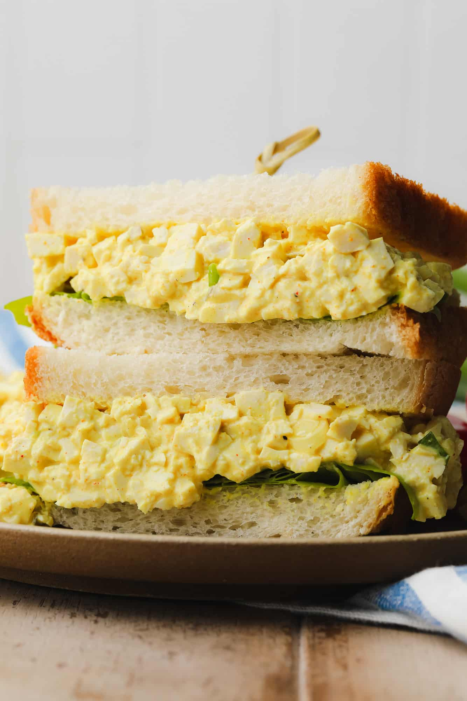

The Best Vegan Egg Salad Recipe

Description
This looks EXACTLY like egg salad to me! I haven't tried it yet, but I'm definitely going to make it someday soon, as I love egg salad and would like to find a good vegan replacement.
Ingredients
- 14.5 ounce block firm tofu or extra-firm
- 1/4 cup Vegan Mayo
- 1 teaspoon yellow mustard
- 1 1/2 tablespoons dill pickle juice
- 2 teaspoons sweet relish
- 1/8 teaspoon smoked paprika
- tiny pinch turmeric
- 1/2 teaspoon black salt
Instructions
- Press the tofu: Wrap the block of tofu in paper towels or a clean tea towel. Place something heavy on top of it, like a cast iron pan, and let it sit for 20 minutes.
- Make the dressing: While the tofu presses, whisk together the vegan mayo, yellow mustard, dill pickle juice, sweet relish, smoked paprika, turmeric, salt and black pepper. Set aside.
- Slice the tofu: Once the tofu is pressed, slice the block into thin strips, then slice thinly the other way. Chop into even smaller pieces.
- Add the tofu to the bowl with the creamy dressing, along with the sliced green onions. Stir well. Cover and refrigerate for 30 minutes if possible before eating, to let the flavors meld together. Serve on bread of choice with butter lettuce, sliced tomatoes, sprouts and whatever else you like. Enjoy!
Note: This website is strictly intended as a project for learning web development. The recipe above was copied from NoraCooks, and the owner of that site retains copyright to all images and intellectual property contained herein.